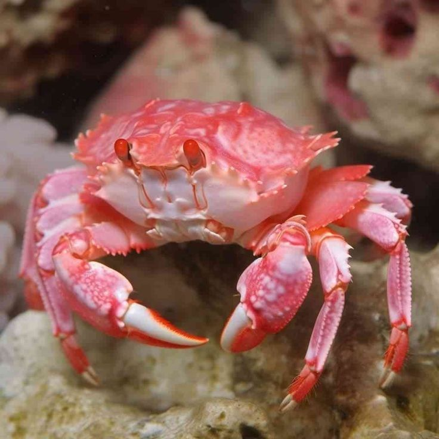
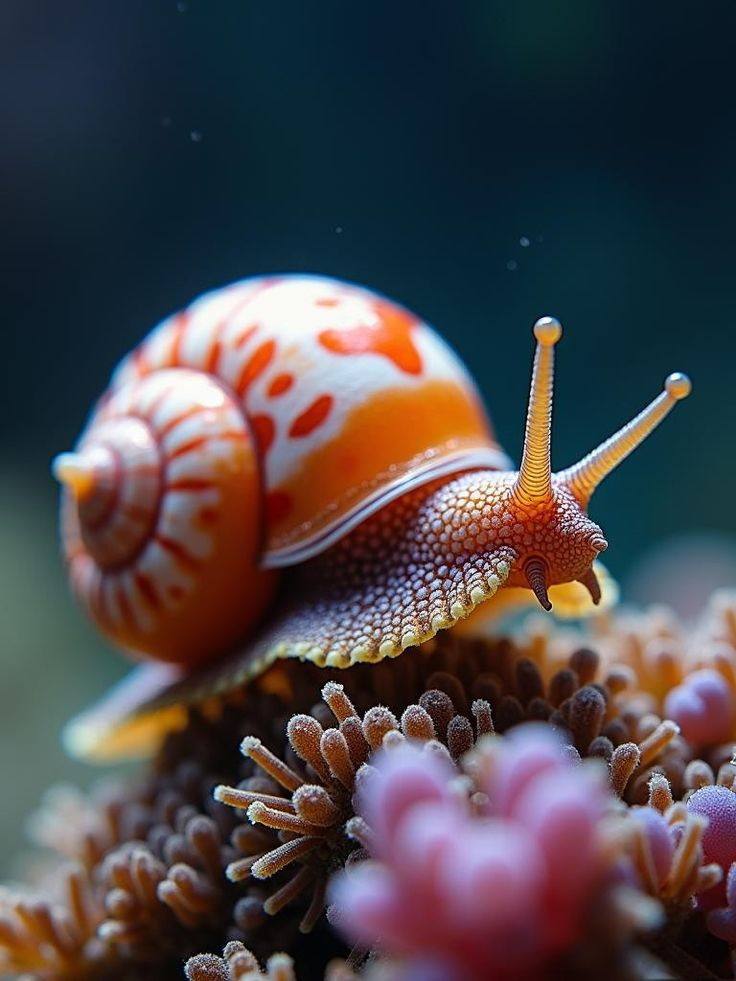
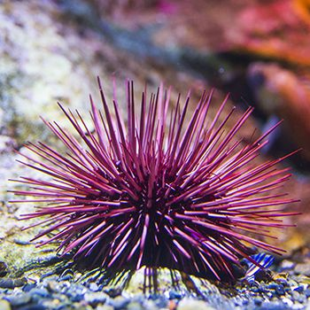
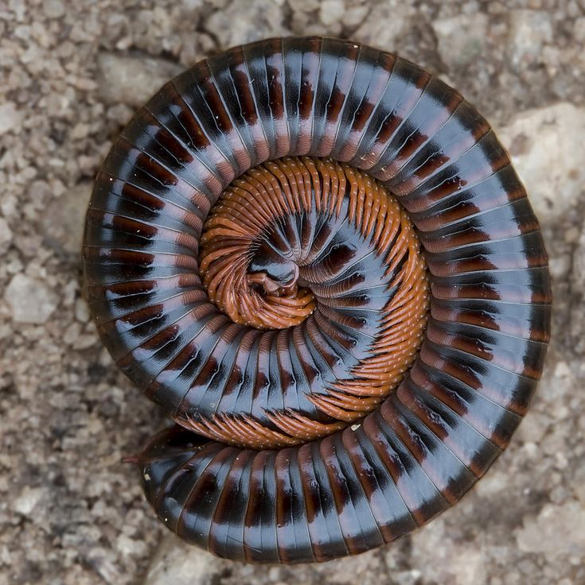
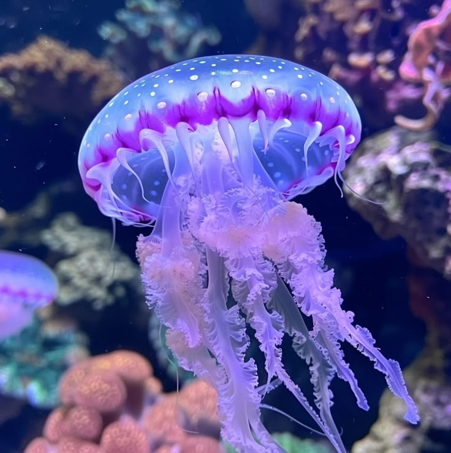
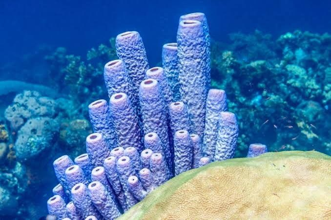

Artrópodos
Los artrópodos son el filo más grande y diverso del reino animal. Son animales invertebrados que se caracterizan por tener un cuerpo segmentado y protegido por un exoesqueleto, además de patas y extremidades articuladas
Los animales invertebrados son aquellos que carecen de columna vertebral y de esqueleto interno articulado.Se divide en 6 grupos:Artropodos, Moluscos, Equinodermos, Anelidos, Cnidarios y Poriferos.

Los artrópodos son el filo más grande y diverso del reino animal. Son animales invertebrados que se caracterizan por tener un cuerpo segmentado y protegido por un exoesqueleto, además de patas y extremidades articuladas

Los moluscos son un extenso grupo de animales invertebrados de cuerpo blando. Junto con los artrópodos, conforman uno de los filos más diversos del reino animal con más de 100.000 especies vivas. Habitan en océanos, aguas dulces y ecosistemas terrestres.

Los equinodermos son un filo de animales invertebrados exclusivamente marinos conocidos por su característica "piel con púas"

Los anélidos son un filo de animales invertebrados de cuerpo blando, alargado y cilíndrico, dividido en segmentos oh panillos. Incluyen organismos como las lombrices de tierra, las sanguijuelas y diversos gusanos marinos.

Los cnidarios son un grupo de animales invertebrados acuáticos, en su mayoría marinos. Incluyen animales muy conocidos como las medusas, los corales, las anémonas y las hidras.

Los poríferos, conocidos comúnmente como esponjas de mar, son animales invertebrados acuáticos y sésiles (sin movilidad). Representan el grupo animal más primitivo y sencillo, ya que carecen de tejidos, órganos y sistemas. Su cuerpo en forma de saco está cubierto por poros.
Los animales invertebrados son aquellos que carecen de columna vertebral y esqueleto interno. Representan aproximadamente el 95% de todas las especies animales en el mundo y abarcan una diversidad biológica enorme, desde pequeños ácaros hasta el calamar gigante.